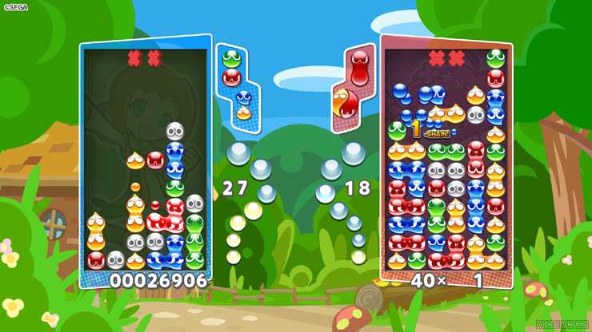

Breadth-First Search in GMS2
Before-hand...
Before we get started, if you don’t understand what breadth-first search is,
then I’d like to direct you to this wiki article
here on the subject.
Now the first question would probably be, “Why would I want to use BFS in my Game Maker game?”
Well, the best example is that it could be used to create matching type games, like Candy Crush or Puyo Pop.

Image: Puyo Puyo Champions by Sega
In the example above, you match 4 or more of a color. Matching them causes them to ‘pop’, and destroy themselves (while also sending garbage along to the other player’s board).
Writing code
To implement something like this, you would need a few things:
- A ds_list for storing the instance ids of the visited instances.
- A ds_queue for storing found instance ids and is used for matching.
- A ‘type’ variable that is used to differentiate instances from each other.
- A ‘visited’ variable that tells us whether or not it has been looked at or not, so we can initiate the function in its Step event.
Here’s my example function below:
function BSF(_current) {
var _size = 8; //size of the sprite
var _q = ds_queue_create();
var _v = ds_list_create(); //visited
ds_list_add(_v,_current);
ds_queue_enqueue(_q,current);
_current.visited = true;
while (!ds_queue_empty(_q)) {
var _c = ds_queue_head(_q); //current in the queue
ds_queue_dequeue(_q);
//Left Side
var _left = instance_place(_c.x-_size,_c.y-_size,objPuyo);
if (instance_exists(_left) && _left.type == _c.type && !_left.visited) {
ds_queue_enqueue(_q,_left);
ds_list_add(_v,_left);
_left.visited = true;
}
//You should check the other sides too
}
}
I only showed the left side for connections because the other ones are the exact same, just with different coordinates to check at.
What's the code mean?
To simplify it a little, what we’re doing is checking the instances surrounding the one at the head of the queue (by using _size as an offset based upon the size of the object’s width and height),
and adding them to the list and queue if their type (or color) matches with the other ones.
Once we have all of them in the list, we can do whatever we’d like with them by calling them using with() or accessing them via a loop.
For now however, I have a simple debug message show in the IDE with how many pieces (obj) are connected. I use the ‘active’ variable instead of checking if the instance has been checked to make sure that when the board isn’t having pieces put on it,
the pieces will try to destroy themselves and count up the chain counter.
Conclusion
Once you’ve been able to put this together, you can use this to create any kind of matching game you’d like.
I wrote this up real quick after doing some work on BFS for my C++ class last semester,
and found the tutorials online for creating this to be either over-complicated (going through the process of creating an entire game) or unfinished (and never getting to the part of actually matching pieces together).
This was a short little mini-project I wanted to work on for a bit between semesters, so this may not be the best way to handle this process - but it’s an example on how to handle Breadth-First Search in GML.